Take-home Exercise 1
1. Introduction
In this exercise, I created a 3x3 trellis view dashboard of the Age-Sex pyramid of Singapore’s resident population for 9 of the 55 planning areas in Singapore for 2022. The data is a CSV file extracted from Singstat website named ‘respopagesextod2022’.
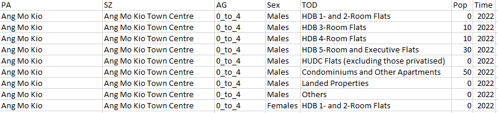
I created a multi-select filter card for planning area so that we can choose whichever 9 planning areas we want to visualize but for the analysis I chose 9 specific planning areas as described in Section 3.
2. Step-by-step procedure
| No. | Step | Screenshot |
|---|---|---|
| 1 | Load the excel file into Tableau. Drag ‘respopagesextod2022’ worksheet into the main pane under Data Source. Rename the variables accordingly (e.g. from AG to ‘Age Group’). Note: Not much pre-cleaning of the data is necessary for this exercise, as the aggregations (e.g. sum of population count by gender, age group, planning area) will automatically be done by Tableau when the graphs are created. The default data types will also not impact the final visualization (e.g. year is not used). |
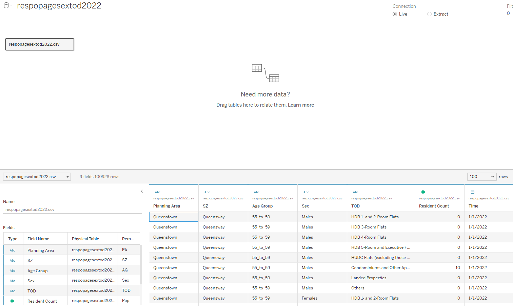 |
| 2 | Create a new sheet. We start by creating just 1 Age-Sex pyramid for the whole resident population first. Click on the down arrow as shown in red circle in the the screenshot and create calculated fields ‘CountFemales’ and ‘CountMales’ using the formula in the screenshot. |
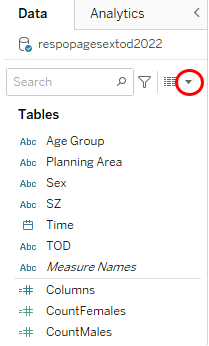 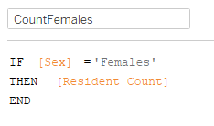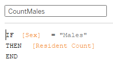 |
| 3 | Drag ‘Age Group’ into the Rows field and ‘CountMales’ and ‘CountFemales’ into the Columns field. | 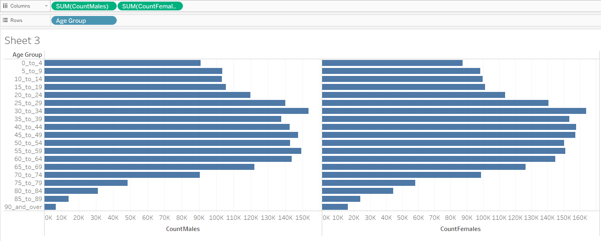 |
| 4 | Right click on ‘CountMales’ on the horizontal axis and click ‘Edit Axis’. Select ‘Reversed’ under Scale. |  |
| 5 | To filter only 9 planning areas, drag ‘Planning Areas’ to the Filters box. Randomly select 9 planning areas first. | 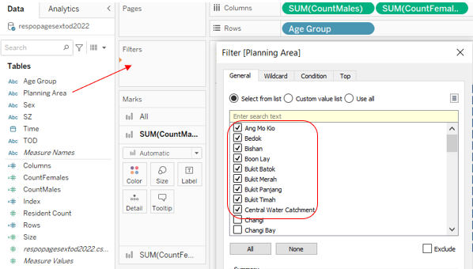 |
| 6 | Click on the arrow in the ‘Planning areas’ pill and select ‘Show Filter’ to display the filter card so that you can select any planning areas you wish to visualize later on. | 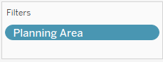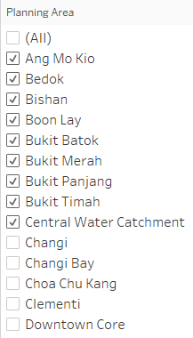 |
| 7 | Under Marks box -> ‘Sum(CountFemales)’, click on ‘Color’ and select the desired color to differentiate the sexes by color. | 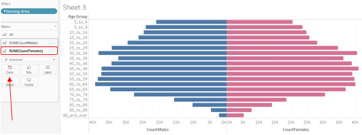 |
| 8 | Next, we create the Trellis View. Create a new calculated field, ‘Index’ using the formula shown in the screenshot. | 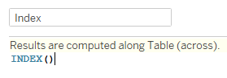 |
| 9 | Create a new parameter called ‘# of Columns’, choose Data Type ‘Integer and input ’3’ under Current Value. This is because we want to have a 3 x 3 Trellis View. | 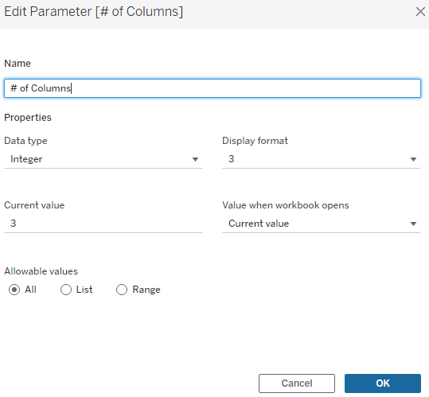 |
| 10 | Create 2 new calculated fields, ‘Rows’ and ‘Columns’ using the formulas shown in the screenshot. After creating these new variables, click on the down arrow when hovering over them on the left panel and convert to ‘discrete’. |
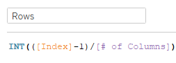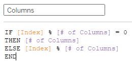 |
| 11 | Drag ‘Rows’ into the Rows field and ‘Columns’ into the Columns field. Drag ‘Planning Area’ into the Label box under Marks -> All. | 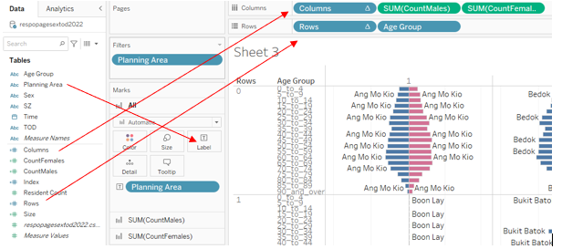 |
| 12 | Click on the down arrow in the ‘Columns’ pill in the Columns field and select Compute Using -> Planning Area. Do the same for the ‘Rows’ pill in the Rows field. |
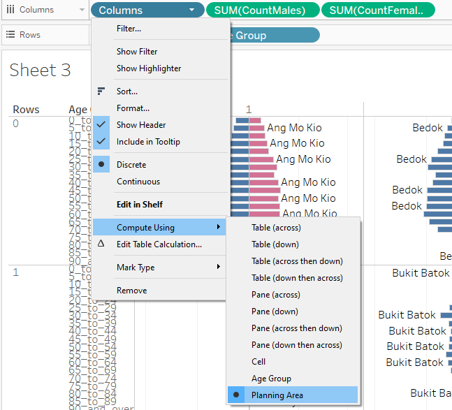 |
| 13 | Next, we move on to labeling the planning areas. First, un-check ‘Show mark labels’ by clicking on Label under Marks -> All. Note: I’m doing it in a slightly different way, so that the Planning Area can be in a column on its own. However, I’ve also prepared the standard version where the label appears on the top right (simply allow label overlap, always show label for one of the bars and click and move it around). The instructions below are for the non-standard way. |
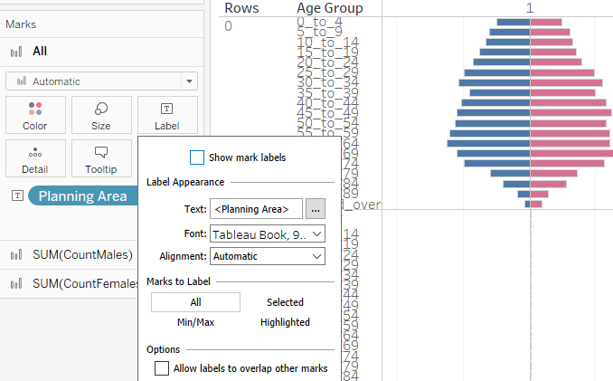 |
| 14 | Create a new variable directly within the Columns field by double-clicking on an empty space within it. Type in ‘AVG(0)’. Drag the newly created pill to the left of the SUM(CountMales) pill. | 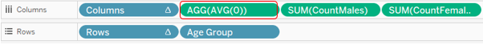 |
| 15 | Under Marks -> AGG(AVG(0)), change the type to ‘Line’ and the Opacity to 0%. | 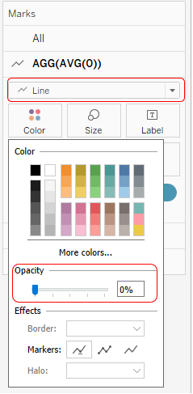 |
| 16 | Drag ‘Planning Area’ to Label under Marks -> AGG(AVG(0)). Select ‘Line Ends’ under ‘Marks to label’ and un-check ‘Label end of line’. | 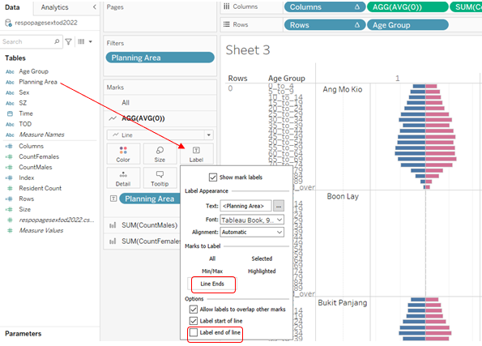 |
| 17 | Lastly, improve the aesthetics. Hide the headers on the top and left by right-clicking and de-selecting ‘Show Header’. |
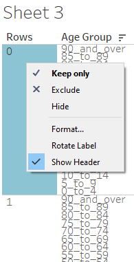 |
| 18 | Change the order of Age Group by Data source order so that youngest Age Group is at the bottom and oldest at the top. | 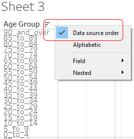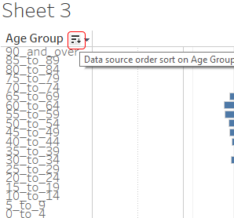 |
| 19 | Change the title of the sheet by clicking on the title field or changing it dynamically in the sheet name. Change the labels on the horizontal axis by right-clicking on them. |
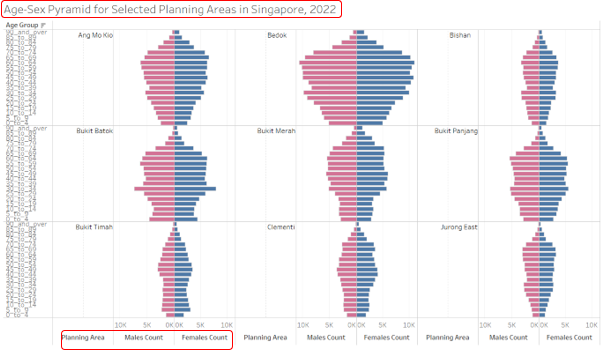 |
| 20 | Add or delete information in the tooltip under Marks -> All -> Tooltip. | 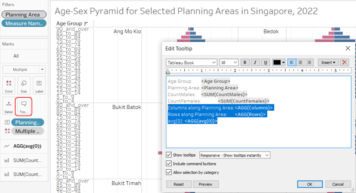 |
| 21 | Create a new dashboard ‘Dashboard 1’, drag ‘Age-Sex Pyramid for Selected Planning Areas in Singapore, 2022’ into the pane. In this case, as we only have one visualization in the dashboard, there is no need to add title text or make other changes. |
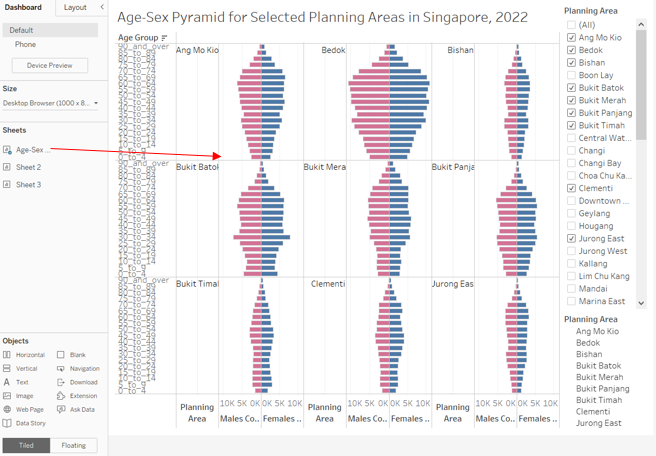 |
| 22 | Adjust the size of charts, dashboard, etc. for better presentation. Extract data if necessary. Click Server -> Tableau Public -> Save to Tableau Public’ for publishing. Links to my Tableau Public visualizations: |
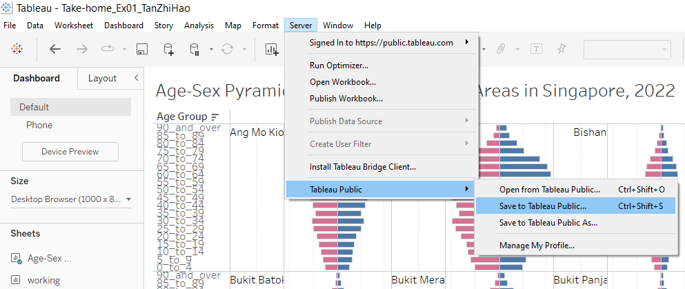 |
3. Write-up on Patterns observed from visualization
For the pattern analysis, I selected 9 planning areas (PA) split equally by 3 market segments as defined by the Urban Redevelopment Authority (URA):
Core Central Region (CCR): Bukit Timah, Newton, Novena
Rest of Central Region (RCR): Bishan, Toa Payoh, Queenstown
Outside Central Region (OCR): Jurong East, Tampines, Yishun

(1) For almost all the PA, there seems to be several horizontal peak and troughs. The age groups between 55 to 69, as well as age groups between 25 to 39 are the peaks while the other age groups are the troughs. This is reflective of the Baby Boomers (around age 59-77) and their children (Millennials around age 27-42), which have relatively more births compared to the other generations.
(2) In general, more people live in the OCR compared to the RCR which in turn has more people compared to the CCR. This could be reflective of the ratio of residences compared to other infrastructure in the different regions, as well as affordability. We can see that the age-sex pyramids are widest for Tampines and Yishun, and narrowest for Newtown and Novena, while the rest are in between. We note that there are some minor exceptions such as Bishan (RCR), Bukit Timah (CCR) and Jurong East (OCR) being quite similar to each other due to proportion of residences, but this does not cause the overall trend to deviate greatly.
(3) The Sex distribution seems to be relatively evenly distributed for most age groups (with slightly more females than males) except for those aged 75 and above where the difference is more pronounced. This could be due to higher life expectancy for females compared to males, which are 85.9 and 81.1 respectively for Singapore residents in 2021.
(4) For PAs in the RCR and OCR, the largest or second largest age group is 30-34. However, the largest age group for PAs in the CCR is 45-49. This could be because residences for PAs in CCR are more expensive compared to other market segments and, generally, those aged 45-49 would have higher income and spending power compared to the younger age groups and be able to afford living in the CCR.
(5) There are signs of a shrinking population, with the age groups within 0 to 19 smaller than the earlier generations, with the exception of those above 70. The top and bottom ends of the pyramid are the narrowest. It is understandable that there would be fewer people in the older age groups as they pass on. However, the pattern also shows that there are fewer young people and we could gradually see an aging population as the baby boomers move into their senior years. Unless the trends are reversed, the Millennials (children of the Baby Boomers) could be the last sizeable age group.